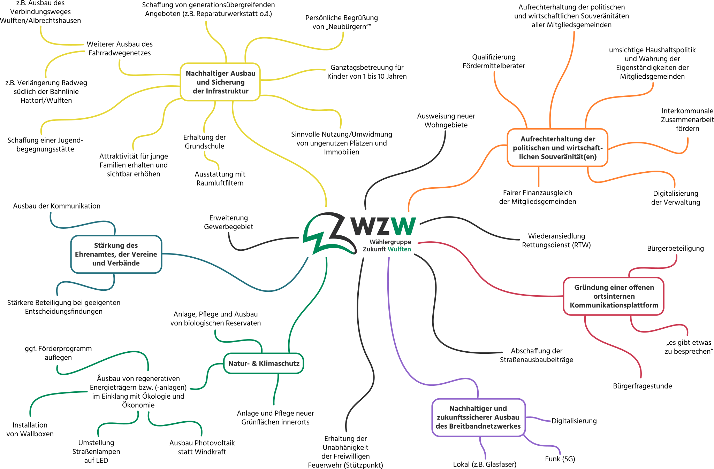

Das haben wir erreicht
Aus Versprechen wurden Taten. Hier ein Überblick über zentrale Erfolge der vergangenen Wahlperiode.
Abschaffung der Straßenausbaubeiträge
Eines unserer Kernanliegen 2021: keine ungerechte Belastung mehr für Anwohner durch STRABS. In Niedersachsen ist die Abschaffung politisch durchgesetzt.
Ausbau regenerativer Energien
Unser „1.000-Dächer-Programm" hat den Anstoß gegeben: Photovoltaik wurde zum Alltagsthema in Wulften – auf privaten wie öffentlichen Gebäuden.
Glasfaser-Breitbandausbau
Schnelles Internet für alle Haushalte – damit Homeoffice, Bildung und digitale Teilhabe in Wulften nicht länger eine Frage des Wohnorts sind.
Förderung von Vereinen & Initiativen
Über die WKC haben wir mehrere lokale Projekte und Vereine finanziell unterstützt – siehe „Das haben wir gefördert" auf der Startseite.
Aufwertung der Naherholung
Wanderwege, Spielplätze und Treffpunkte – für ein lebenswertes Dorf, in dem sich alle Generationen wohlfühlen.
Mehr Bürgerbeteiligung & Transparenz
Direkter Draht zum Vorstand, anonyme Nachrichtenfunktion, regelmäßige Berichte – Politik vor Ort soll ansprechbar bleiben.
Die Themen von damals
Mit diesen drei Schwerpunkten sind wir 2021 angetreten – sie sind bis heute Maßstab unserer Arbeit.
construction
1. Straßenausbaubeiträge abschaffen
STRABS – ungerecht, undurchsichtig, abzuschaffen.
expand_more
1. Straßenausbaubeiträge abschaffen
STRABS – ungerecht, undurchsichtig, abzuschaffen.
Wer in Wulften wohnt, soll nicht plötzlich mit fünfstelligen Sonderbeiträgen für Straßenarbeiten konfrontiert werden, an denen er gar keine direkte Schuld hat. Wir haben 2021 klar Position gegen die Straßenausbaubeiträge bezogen – und unterstützen weiterhin alle Anstrengungen, die diesen unsozialen Posten dauerhaft aus der kommunalen Realität entfernen.
Unser Ziel bleibt: faire, planbare Finanzierung von Infrastruktur ohne Härtefälle für Anwohner.
solar_power
2. Ausbau regenerativer Energien
Unser „1.000-Dächer-Programm".
expand_more
2. Ausbau regenerativer Energien
Unser „1.000-Dächer-Programm".
Wir wollten erreichen, dass möglichst viele Dächer in Wulften zur Stromproduktion genutzt werden. Mit Aufklärung, Beratung und gezielter Förderung sind heute Photovoltaikanlagen ein selbstverständlicher Anblick im Ortsbild – ein konkreter Beitrag zur Energiewende vor Ort.
Auch öffentliche Gebäude und Vereinsanlagen müssen weiter mitgedacht werden – für die Wahl 2026 erweitern wir dieses Thema (siehe Wahl 2026).
router
3. Schnelles Internet für Wulften
Glasfaser-Breitbandausbau für alle Haushalte.
expand_more
3. Schnelles Internet für Wulften
Glasfaser-Breitbandausbau für alle Haushalte.
Homeoffice, Schule, Streaming, digitale Behördengänge: Modernes Leben braucht stabiles, schnelles Internet. Wir haben uns entschieden für den Glasfaser-Ausbau in Wulften eingesetzt – heute ist die Versorgung deutlich besser als zu Beginn der Wahlperiode.
Unsere Themen-Mindmap (2021)
So haben wir damals unsere Schwerpunkte für Wulften visualisiert – mit ihren Verzweigungen in Alltagsthemen.

2026 entscheiden Sie wieder.
Die nächste Kommunalwahl steht im September 2026 an. Lernen Sie unsere Themen für die kommende Wahlperiode kennen – oder bringen Sie sich direkt ein.